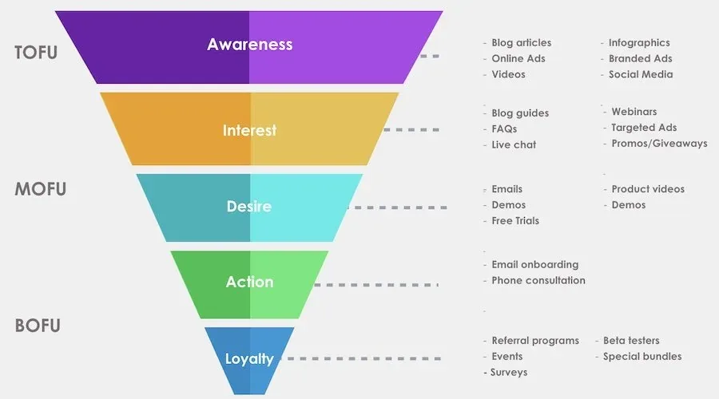

Your Funnel

The funnel is a common diagram that shows the stages a buyer goes through when making a purchase decision. You can likely relate to it because you’re a buyer, too.
There are hundreds of similar funnel diagrams on the internet. I chose this one because it’s content-based, meaning it displays common content and tactics that resonate with any buyer at each stage of their decision.
What we need to explore further is whether this common consumer packaged goods (CPG) model applies to donors. Donors do buy stuff, after all.
At first glance, there are tactics we already use in fundraising:
- Top of funnel (TOFU): blogs and news, online ads, social media
- Middle of funnel (MOFU): emails, likely from lead-gen campaigns
- Bottom of funnel (BOFU): events, surveys
Some tactics don’t have a clear connection to fundraising, such as demos and phone consultations. I’d argue they’re relevant to donors too. Instead of a demo, think of a webinar on what your charity does, showing the potential impact if the donor gives. Instead of a phone consultation, think of a welcome call to thank the donor and ask if they have any questions.
Our goal is to push and pull donors down the funnel. This is done through the donor journey. Each journey is unique, but donors do share common interests and behaviours, and this is where audiences and segments come into play. When you get the right donor into a well-developed funnel, your odds of conversion are higher.
What does a well-developed funnel look like?
Each charity is different, but in short it’s a planned journey with relevant content for every step of the donor’s buying stage. That is much easier said than done. Developing a successful funnel requires discussion, planning, data, insights, resources and technology to implement and optimize the right funnel for your audience.
Tip: the first step is to develop your audience. Read my thoughts on audience here.
Want to talk it through? Contact matt@mt1.co and I’d be happy to help.